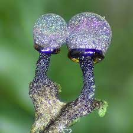
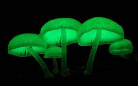
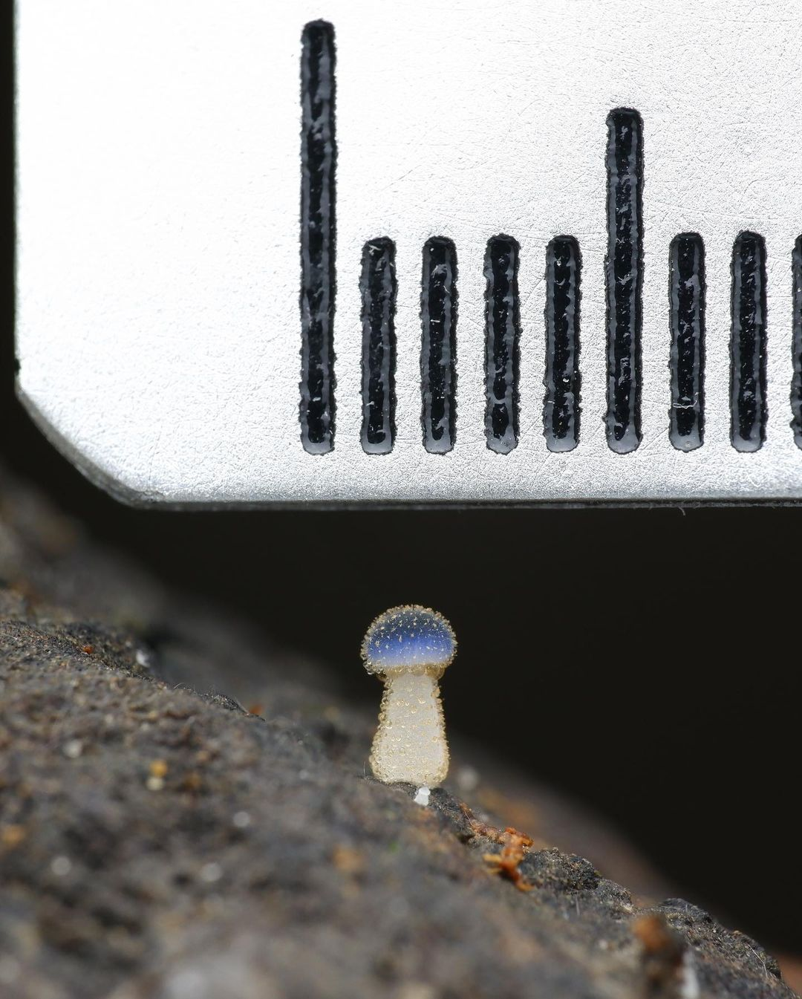

Cool Mushrooms
These are some of the mushrooms i found that look cool
elaeomyxa cerifera
The Elaeomyxa genus used to be a fungus but now belongs to the true slime mold phylum Mycetozoa (also known as Myxomycetes) of fungus-like organisms that have at different times been classified in the protist, animal, and fungi kingdoms. buried deep within the heart of Eagle Mountains.
These are overwhelmingly beautiful, but they aren't mushrooms or even fungi. Plasmodial slime molds are in Amoebozoa with organisms like Amoeba proteus.
Fungi are in the genetic supergroup Obazoa with the animals, which means a komodo dragon is more closely related to fungi than a slime is. Slimes are sometimes called myxomycetes or myxogastrids, but those names exclude some species.
Like other true slime molds, Elaeomyxa species have distinct life cycle phases. During the trophic (feeding or ingesting) stage. called the plasmodium, the slime mold ingests food in an amoeba-like manner.
The slime mold then transitions to the reproductive phase, in which fruiting bodies produce spores for reproduction.
More interesting mushrooms...
Mycena chlorophos
It is one of sixteen Mycena fungi that emit light. 
Mycena chlorophos is a species of agaric fungus in the family Mycenaceae. The fungus is found in subtropical Asia, including India, Japan, Taiwan, Polynesia, Indonesia, and Sri Lanka, in Australia, and Brazil.
It is an aerobe that emits a pale green light from its pileus and gills and the Mycena species are characterized by their bell-shaped caps and thin stems
Mycena subcyanophala

Mycena subcyanocephala is a species of fungus, which has its habitat in the tropical parts of Taiwan. It has been spotted eight times. Mycena subcyanophala is currently the smallest species of fungus in the world.
It is only 1 mm or 500 µm tall, and is also about 100 to 250 µm wide. Mycena subcyanocephala also gathers a lot of humidity.